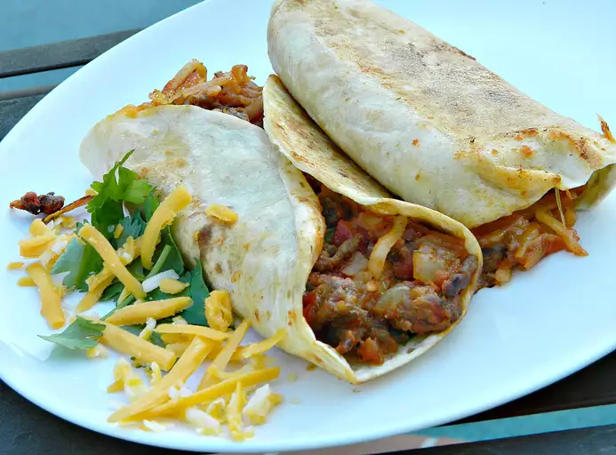

Home
Carne Asada Breakfast Burrito

Description
A wonderful breakfast burrito to change up your morning meals.
Ingredients
- 2lbs beef skirt steak, cut into thin strips
- 2tbsp carne asada seasoning
- 1tbsp garlic powder
- 1tbsp vegetable oil
- 1/2 sweet onion, diced
- 1 red bell pepper, seeded and chopped
- 1 jalapeno pepper, seeded and diced
- 1 (14.5oz) can of Hunt's Diced Tomatoes, drained
- 2 cups frozen diced potatoes
- salt and pepper to taste
- 3tbsp butter, divided
- 6 eggs, whisked
- 2 cups shredded Mexican cheese blend
- 4 (12-inch) flour OR corn tortillas *easier to wrap with flour tortillas
Steps
- Place beef slices in a mixing bowl. Sprinkle with asada seasoning and garlic powder; toss in bowl to evenly coat. Let marinade for 5 minutes.
- Heat oil in a large, deep skillet over medium-high (5-7) heat. Place beef strips in skillet. Cook and stir until browned. Stir in bell pepper, onions, and jalapeno pepper. Add tomatoes and potatoes. Cook mixture until potatoes are tender, 5-8 minutes. Season with salt and pepper. Transfer mixture to a bowl.
- Melt 1tbsp butter in the same skillet. Add the eggs, stirring occasionally, until eggs are scrambled and set. Transfer the beef mixture back to skillet. Cook and stir until warmed through, about 2 minutes. Melt the remaining 2tbsp of butter in a small dish in microwave.
- Divide shredded cheese among tortillas; divide beef and veggie mixture to add on the cheese. Fold the sides of the tortillas and roll up. Brush with melted butter and place folded side down in pan to brown; flip and brown top side. Burrito should be warmed through.
- Serve and enjoy!